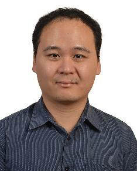

Associate Professor, Universiti Tunku Abdul Rahman
Lee Wai Kong
I make cryptography fast. My work brings post-quantum schemes, homomorphic encryption and privacy-preserving machine learning onto GPUs, FPGAs and small embedded processors.
- Chairperson, Centre for Cybersecurity (CCS)
- Deputy Director, XDU-UTAR Institute of Science, Technology and Innovation
waikong.lee@gmail.com Kampar, Perak, Malaysia
About
I am an Associate Professor at Universiti Tunku Abdul Rahman (UTAR) in Malaysia, where I chair the Centre for Cybersecurity. I started out in industry, testing storage hardware and writing firmware for media players and handheld oscilloscopes. That background still shapes how I do research: an algorithm is only finished when it runs well on real hardware.
Most of my work sits where cryptography meets computer architecture. Secure schemes are often too slow for the systems that need them, so I study how to map them onto parallel hardware. Recent projects cover lattice-based signatures and key encapsulation on GPUs, number theoretic transforms for fully homomorphic encryption, and lightweight neural networks for constrained devices.
I received my PhD in cryptography and electronic engineering from UTAR in 2018, and spent several years as a research fellow at Gachon University in Korea. I am a Fellow of the ASEAN Academy of Engineering and Technology, and was listed among Stanford University's top 2% of scientists in 2025.
Research projects
Ongoing
-
Development of GPU-accelerated high-performance privacy preserving machine learning
-
Privacy-preserving Federated Learning Framework for Secure Vehicular Surveillance System
-
Development of GPU-Optimised Data Protection Technology for Centralized and Federated Learning in AI
Completed
Image-based real-time assistant system with distance-to-haptic information for visually impaired people
Development of Privacy Preservation Technologies and Blockchain for Industry 4.0
Deep Learning Inference Engine for FPGA based IoT Processor with Balanced Energy Efficiency and Speed Performance
Development of IoT Platform for Aquaculture Monitor
New Post-quantum Identity Based Encryption Scheme With Practical Implementation for Internet of Things Communication
Automated Guided Vehicle with Robust Localization Solution and Real Time Visualization in Cloud
Hadoop based automatic processing of CAD files; advanced and context aware text/media analytics for file classification
Accelerating direct sparse matrix solver in GPU platform with application to circuit simulation
Cryptographic Engine for IoT Application: Design, Implementation and Integration with IoT Processor
Accelerating Fully Homomorphic Encryption in GPU Platform
SSLAP: SSL Acceleration Platform
Cyber physical systems for collaborative indoor localisation and mapping
High Speed Cipher Suite in Embedded GPUs
High Speed Searchable Symmetric Encryption System on GPU
Fast Implementation of Advanced Cryptographic Hash Function on GPGPU and Cell processors
Honours and awards
- 2025Stanford University's Top 2% Scientists, Information & Communication Technologies category
- 2022Science and Technology Award, Malaysia Toray Science Foundation (co-winner)
- FellowASEAN Academy of Engineering and Technology (AAET)
- 2018Best Paper Award, International Conference on Electrical Machines and Systems (ICEMS), Jeju Island, for “Localization of Mobile Sensor Nodes Using QR Codes and Dead Reckoning with Error Correction”
- 2018Best Paper Award, 8th IEEE Symposium on Computer Applications & Industrial Electronics (ISCAIE), Pulau Pinang, for “Multiplying Very Large Integer in GPU with Pascal Architecture”
- 2018Best Paper Award, 7th International Conference on Green and Human Information Technology (ICGHIT), Chiang Mai, for “An IPS Evaluation Framework for Measuring the Effectiveness and Efficiency of Indoor Positioning Solutions”
Publications
Book
- Seong Oun Hwang, I. Kim, W. K. Lee, “Modern Cryptography with Proof Techniques and Implementations,” Routledge Taylor and Francis Group, 2023.
Journal articles
In press
- W. Elmetamri, M. Chen, W.-K. Lee, R. Achar, S. O. Hwang, “Fine-grained Parallel Implementation of Post-quantum HQC Key Encapsulation Mechanism on GPUs,” IEEE Embedded Systems Letters, in press.
2026
- K. L. See, W.-K. Lee, S. Y. Liew, S. K. Teoh, H. G. Goh, R. Achar, “MKNet: Adaptive Kernel Mixing Depthwise Convolution for Lightweight Object Detection,” IEEE Internet of Things Journal, vol. 13, no. 21, pp. 50513 - 50525, 2026.
- S. Adhikary, W.-K. Lee, A. Karmakar, Y. Lee, S. O. Hwang, R. Achar, “cuTraNTT: GPU-based Transposed Number Theoretic Transform with Low Latency Homomorphic Encryption for IoT Applications,” Cluster Computing, in press, 2026.
2025
- M. A. Hafeez, W.-K. Lee, A. Munir, S. O. Hwang, “Parallel Optimization of NTT for Kyber Key Encapsulation Mechanism Using GPU-Accelerated Plantard Arithmetic,” IEEE Embedded Systems Letters, in press, 2025.
- J. C. See, H. F. Ng, H. K. Tan, J. J. Chang, W.-K. Lee, “A compact and flexible FPGA accelerator for regular and octave convolutional neural networks.” Neural Computing and Applications, vol. 37, no. 19, pp. 13497-13524, 2025.
- M. A. Yong, K. M. Mok, W. K. Lee, S. K. Teoh, D. C. K. Wong, “RISC32-A: A Low-Power Asynchronous IoT Processor on FPGA with Adaptive Pipeline Structure,” IEEE Internet of Things Journal, vol. 12, no. 9, pp. 12669 - 12685, 2025.
- W.-P. Kiat, W. K. Lee, H.-K. Tan, H.-F. Ng, “Pipeline ShiftAddNet: An FPGA-Based CNN Implementation With Low Hardware Consumption Targeting Constrained Devices,” International Journal of Circuit Theory and Applications, vol. 53, no. 9, pp. 5538 - 5547, 2025.
- K. H. Han, W. K. Lee, A. Karmakar, M. K. Yi, S. O. Hwang, “QuripfeNet: Quantum-Resistant IPFE-Based Neural Network,” IEEE Transactions on Emerging Topics in Computing, vol. 13, no. 3, pp. 640 - 653, 2025.
- C. L. Ng, D. C. K. Wong, G. L. Chia, B. M. Goi, W. K. Lee, W. S. Yap, “A signature scheme constructed from zero knowledge argument of knowledge for the subgraph isomorphism problem,” Theoretical Computer Science vol. 1038, pp. 115180, 2025.
- A. Mujtaba, W. K. Lee, B. C. Ko, H. J. Chang, S. O. Hwang, “AuGQ: Augmented quantization granularity to overcome accuracy degradation for sub-byte quantized deep neural networks,” Applied Intelligence vol. 55, no. 7, pp. 1-20, 2025.
- V. Kukutla, R. Achar, W.-K. Lee, “TC-GVF: Tensor Core GPU based Vector Fitting via Accelerated Tall-Skinny QR Solvers,” IEEE Components, Packaging and Manufacturing Technology, vol. 15, no. 1, pp. 54-63, 2025.
2024
- W.-K. Lee, S. C. Seo, H. Seo, D. C. Kim, S. O. Hwang, “Speed Record of AES-CTR and AES-ECB Bit-sliced Implementation on GPUs,” IEEE Embedded Systems Letters, vol. 16, no. 4, pp. 481-484, 2024.
- J. L. Chan, W.-K. Lee, D. C. K. Wong, W. S. Yap, B. Y. Ooi, B. M. Goi, “High throughput acceleration of NIST lightweight authenticated encryption schemes on GPU platform,” Cluster Computing, vol. 27, no. 8, pp. 11213 - 11235, 2024.
- M. A. Hafeez, W.-K. Lee, A. Karmakar, S. O. Hwang, “Efficient TMVP-Based Polynomial Convolution on GPU for Post-Quantum Cryptography Targeting IoT Applications,”IEEE Internet of Things Journal, vol. 11, no. 13, pp. 23428 - 23443, 2024.
- W.-K. Lee, Raymond K. Zhao, R. Steinfeld, A. Sakzad, S. O. Hwang, “High Throughput Lattice-based Signatures on GPUs: Comparing Falcon and Mitaka,”, IEEE Transactions on Parallel and Distributed Systems, vol. 35, no. 4, pp. 675-692, 2024.
- K. Han, W.-K. Lee, A. Karmakar, J. M. B. Mera, S. O. Hwang, “cuFE: High Performance Privacy Preserving Support Vector Machine with Inner-Product Functional Encryption,” IEEE Transactions on Emerging Topics in Computing, vol. 12, no. 1, pp. 328 - 343, 2024.
2023
- M. K. Yi, W.-K. Lee, S. O. Hwang, “A human activity recognition method based on lightweight feature extraction combined with pruned and quantized CNN for wearable device,” IEEE Transactions on Consumer Electronics, vol. 69, no. 21, pp. 651-670, 2023.
- J.C. See, H. F. Ng, H. K. Tan, J. J. Chang, K. M. Mok, W. K. Lee, C. Y. Lin, “Cryptensor: A Resource-Shared Co-processor to Accelerate Convolutional Neural Network and Polynomial Convolution,” IEEE Transactions on Computer-Aided Design of Integrated Circuits and Systems, vol. 42, no. 12, pp. 4735 - 4748, 2023.
- H.D. Kwon, H. J. Kim, M.J. Sim, W. K. Lee, H. Seo, “Look-up the Rainbow: Table-based Implementation of Rainbow Signature on 64-bit ARMv8 Processors,” ACM Transactions on Embedded Computing Systems, vol. 22, no. 5, pp. 1-19, 2023.
- M. A. Hafeez, W.K. Lee, A. Karmakar, S. O. Hwang, “High Throughput Acceleration of Scabbard Key Exchange and Key Encapsulation Mechanism Using Tensor Core on GPU for IoT Applications,” IEEE Internet of Things Journal, vol. 10, no. 22, pp. 19765 - 19781, 2023.
- Y. M. Kim, K. Han, W.-K. Lee, H. Chang, S. O. Hwang, “Non-zero Grid for Accurate 2-Bit Additive Power-Of-Two CNN Quantization,” IEEE Access, vol. 11, pp. 32051 - 32060, 2023.
- B. Y Ooi, W.-K. Lee, M. Shubert, Y. W. Ooi, C. Y. Chin, W. H. Woo, “A Flexible and Reliable Internet-of-Things Solution for Real-Time Production Tracking with High Performance and Secure Communication,” IEEE Transactions on Industry Applications, vol. 59, no. 3, pp. 3121 - 3132, 2023.
- Z. Y. Wong, D. C. K. Wong, W.-K. Lee, K. M. Mok, W. S. Yap, A. Khalid, “KaratSaber: New Speed Records for Saber Polynomial Multiplication using Efficient Karatsuba FPGA Architecture.” IEEE Transactions on Computers, vol. 72, pp. 1830-1842, 2023.
- S. Khan, W.-K. Lee, A. Khalid, A. Majeed, S. O. Hwang, “Area-optimized Constant-time Hardware Implementation for Polynomial Multiplication,” IEEE Embedded Systems Letters, vol. 15, no. 1, pp. 5 - 8, 2023.
2022
- S. Khan, W.-K. Lee, A. Karmakar, J. M. B. Mera, A. Majeed, S. O. Hwang, “Area-time Efficient Implementation of NIST Lightweight Hash Functions Targeting IoT Applications,” IEEE Internet of Things Journal, 2022.
- M. Sim, S. Eum, H. Kwon, K. Jang, H. Kim, H. Kim, G. Song, W.-K. Lee, H. Seo, “Optimized Implementation of Simpira on Microcontrollers for Secure Massive Learning,” Symmetry, vol. 14, no 11, pp. 2377, 2022.
- S. Khan, W.-K. Lee, A. Majeed, S. O. Hwang, “Blockchain meets lightweight cryptography,” IEEE Potentials vol. 41, no. 6, pp. 38-42, 2022.
- M. W. Hafiz, W.-K. Lee, S. O. Hwang, M. Khan, A. Latif, “Discrete Logarithmic Factorial Problem and Einstein Crystal Model Based Public-Key Cryptosystem for Digital Content Confidentiality,” IEEE Access 10, 102119-102134, 2022.
- A. Mujtaba, W.-K. Lee, S. O. Hwang, “Low Latency Implementations of CNN for Resource-Constrained IoT Devices,” IEEE Transactions on Circuits and Systems II: Express Briefs vol. 69, no. 12, pp. 5124-5128, 2022.
- BC Chang, WK Lee, BM Goi, SO Hwang, “High Performance Integer Multiplier on FPGA with Radix-4 Number Theoretic Transform,” KSII Transactions on Internet & Information Systems vol. 16, no. 8, 2022.
- H. Kwon, H. Kim, S. Eum, M. Sim, H. Kim, W.-K. Lee, Z. Hu, H. Seo, “Optimized Implementation of SM4 on AVR Microcontrollers, RISC-V Processors, and ARM Processors,” IEEE Access 10, 80225-8023, 2022.
- W.-K. Lee, R. Achar, “Algorithmic Advancements and a Comparative Investigation of Left and Right Looking Sparse LU Factorization on GPU Platform for Circuit Simulation,” IEEE Access 10, 78993-79003, 2022.
- G. Song, K. Jang, H. Kim, S. Eum, M. Sim, H. Kim, W.-K. Lee, H. Seo, SPEEDY Quantum Circuit for Grover's Algorithm, Applied Sciences 12 (14), 6870, 2022.
- W.-K Lee, H. Seo, S. C. Seo, S. O. Hwang, “Efficient Implementation of AES-CTR and AES-ECB on GPUs With Applications for High-Speed FrodoKEM and Exhaustive Key Search,” IEEE Transactions on Circuits and Systems II: Express Briefs, vol. 69, no. 6, pp. 2962-6966, 2022.
- W.-K Lee, H. Seo, S. O. Hwang, R. Achar, A. Karmakar, J. M. B. Mera, “DPCrypto: Acceleration of Post-Quantum Cryptography Using Dot-Product Instructions on GPUs,” IEEE Transactions on Circuits and Systems I: Regular Papers, vol. 29, no. 9, pp. 3591 - 3604, 2022.
- W.-K Lee, K. Jang, G. Song, H. Kim, S. O. Hwang, H. Seo, “Efficient Implementation of Lightweight Hash Functions on GPU and Quantum Computers for IoT Applications,” IEEE Access, vol. 10, pp. 59661-59675, 2022.
- W.-K. Lee, H. Seo, Z. Zhang, S. O. Hwang, “TensorCrypto: High Throughput Acceleration of Lattice-Based Cryptography Using Tensor Core on GPU,” IEEE Access, vol. 10, pp. 20616 - 20632, 2022.
- K. H. Han, W.-K. Lee, S. O. Hwang, “cuGimli: optimized implementation of the Gimli authenticated encryption and hash function on GPU for IoT applications”, Cluster Computing, vol. 25, pp. 433-450, 2022.
2021
- J. C. See, H. F. Ng, H. K. Tan, J. J. Chang, W.-K. Lee, S. O. Hwang, “DoubleQExt: Hardware and Memory Efficient CNN Through Two Levels of Quantization,” IEEE Access vol. 9, no. 169082-169091, 2021.
- W.-K. Lee, S.O. Hwang, “High Throughput Implementation of Post-quantum Key Encapsulation and Decapsulation on GPU for Internet of Things Applications”, IEEE Transactions on Services Computing, 2021.
- B. L. Tan, K. M. Mok, J. J. Chang, W.-K. Lee, S. O Hwang, “RISC32-LP: Low-power FPGA-based IoT Sensor Nodes with Energy Reduction Program Analyzer,” IEEE Internet of Things Journal, 2021.
- S. Khan, W.-K. Lee, S.O. Hwang, “AEchain: A lightweight blockchain for IoT applications”, IEEE Consumer Electronics Magazine, 2021.
- S. Khan, W.-K. Lee, S.O. Hwang, “Scalable and Efficient Hardware Architectures for Authenticated Encryption in IoT Applications”, IEEE Internet of Things Journal, 2021.
- W.-K. Lee, S. Akleylek, Denis C.-K. Wong, W.-S. Yap, B.-M. Goi, S.-O. Hwang, “Parallel implementation of Nussbaumer algorithm and number theoretic transform on a GPU platform: application to qTESLA”, The Journal of Supercomputing, vol. 77, no. 4, 2021.
- Z.-Y. Wong, Denis C.-K. Wong, W.-K. Lee, K.-M. Mok, “High-Speed RLWE-Oriented Polynomial Multiplier Utilizing Karatsuba Algorithm”, IEEE Transactions on Circuits and Systems II: Express Briefs, vol. 68, no.8, pp. 2157-2161, 2021.
- K. Jang, G. Song, H. Kwon, S. Uhm, H. Kim, W.-K. Lee, H. Seo, “Grover on PIPO”, Electronics, vol. 10, no. 10, pp. 1194, 2021.
- J.-W. Horng, C.-C. Chang, G.-L. Li, W.-K. Lee, S. O. Hwang, “Blockchain-Based Reversible Data Hiding for Securing Medical Images,” Journal of Healthcare Engineering, vol. 2021, 2021.
- J.-Z. Goey, W.-K. Lee, B.-M. Goi, W.-S. Yap, “Accelerating number theoretic transform in GPU platform for fully homomorphic encryption,” The Journal of Supercomputing, vol. 77, pp. 1455-1474, 2021.
- S. Akleylek, M. Soysaldi, W.-K. Lee, S. O. Hwang, D. C-K. Wong, “Novel Post-quantum MQ-based Signature Scheme for Internet of Things with Parallel Implementation”, IEEE Internet of Things Journal, vol. 8, no. 8, pp. 6983 - 6994, 2021.
2020
- W.-K. Lee, R. Achar, “GPU Accelerated Adaptive PCBSO Mode based Hybrid RLA for Sparse LU Factorization in Circuit Simulation”, IEEE Transactions on Computer-Aided Design of Integrated Circuits and Systems, 2020.
- J. H. Phoon, W.-K. Lee, D. C-K. Wong, W.-H. Yap and B.-M. Goi, “Area-Time-Efficient Code-Based Postquantum Key Encapsulation Mechanism on FPGA” in IEEE Transactions on Very Large Scale Integration (VLSI) Systems, vol. 28, no. 12, pp. 2672 - 2684, 2020.
- B.-Y. Ooi, W.-L. Beh, W.-K. Lee, S. Shirmohammadi, “A Parameter-Free Vibration Analysis Solution for Legacy Manufacturing Machines' Operation Tracking,” IEEE Internet of Things Journal, vol. 7, no. 11, pp. 11092 - 11102, 2020.
- S. Ganeshan, N. K. Elumalai, R. Achar, W.-K. Lee, “GVF: GPU Based Vector Fitting for Modeling of Multiport Tabulated Data Networks”, IEEE Transactions on Components, Packaging and Manufacturing Technology, vol. 10, no. 8, pp. 1375 - 1387, 2020.
- J.-H. Phoon, W.-K. Lee, Denis C.-K. Wong, W.-S. Yap, B.-M. Goi, Raphael C.-W. Phan, “Optimized IoT Cryptoprocessor Based on QC-MPDC Key Encapsulation Mechanism”, IEEE Internet of Things Journal, vol. 7, no. 9, pp. 8513 - 8524, 2020.
- J.-C. See, K.-M. Mok, W.-K. Lee, H.-G. Goh, “RISC32-E: Field programmable gate array based sensor node with queue system to support fast encryption in Industrial Internet of Things applications”, International Journal of Circuit Theory and Applications, vol. 48, no. 8, pp. 1209-1226, 2020.
- W.-K. Lee, Raphael C.-W. Phan, B. M Goi, “Fast and Energy-Efficient Block Ciphers Implementations in ARM Processors and Mali GPU”, IETE Journal of Research, vol. 68, no. 4, pp. 2675-2682 2020.
- W.-P Kiat, K.-M Mok, W.-K Lee, H.-G Goh, R Achar, “An Energy Efficient FPGA Partial Reconfiguration Based Micro-architectural Technique for IoT Applications”, Microprocessors and Microsystems, vol. 73, pp.102-966, 2020.
2019
- J.-H. Phoon, Denis C.-K. Wong, W.-K. Lee, “LED and SIMECK FPGA Implementation,” International Journal of Cryptology Research vol. 9, no. 1, pp. 76-89, 2019.
- B.-Y Ooi, Z.-W Kong, W.-K Lee, S.-Y Liew, S Shirmohammadi, “A collaborative IoT-gateway architecture for reliable and cost effective measurements”, IEEE Instrumentation & Measurement Magazine, vol. 22, no.6, pp. 11-17, 2019.
- H. K. Poon, W. S. Yap, Y. K. Tee, W.-K. Lee, B. M. Goi, “Hierarchical gated recurrent neural network with adversarial and virtual adversarial training on text classification”, Neural Networks, vol. 119, pp. 299-312, 2019.
- W.-K Lee, Raphael C.-W. Phan, B. M Goi, “Tera-bit Encryption In A Second: Performance Evaluation of Block Ciphers in GPU With Kepler, Maxwell and Pascal Architecture”, Concurrency and Computation, vol. 31, no. 11, June 2019.
- L. Chen, W.-K. Lee, C. C Chang, K. K. R Choo, N. Zhang, “Blockchain based searchable encryption for electronic health record sharing”, Future Generation Computer Systems, vol. 95, pp. 420-429, 2019.
2018
- B.-Y Ooi, W.-L Beh, W.-K Lee, S. Shirmohammadi, “Using the Cloud to Improve Sensor Availability and Reliability in Remote Monitoring”, IEEE Transactions on Instrumentation and Measurement, vol. 68, no. 5, pp. 1522-1532, December 2018.
- Jacqueline L.-F. Ang, W.-K. Lee, B.-Y. Ooi, Thomas W.-M. Ooi, S.-O. Hwang, “Pedestrian Dead Reckoning with correction points for indoor positioning and Wi-Fi fingerprint mapping”, Journal of Intelligent and Fuzzy Systems, December, 2018.
- C.-C. Chang, W. K Lee, Y. Liu, B. M Goi, Raphael C.-W. Phan, “Signature Gateway: Offloading Signature Generation to IoT Gateway Accelerated by GPU”, IEEE Internet of Things Journal, December, 2018.
- W.-K. Lee, C.-F. Leong, W.-K. Lai, L.-K. Leow, T.-H. Yap, “ArchCam: Real time expert system for suspicious behaviour detection in ATM site”, Expert Systems with Applications, vol.109, no. 1, pp. 12-24, November 2018.
- W.-K. Lee, R. Achar and M. S. Nakhla, “Dynamic GPU Parallel Sparse LU Factorization for Fast Circuit Simulation”, IEEE Transactions on Very Large Scale Integration (VLSI) Systems, vol. 26, no. 11, August 2018.
- W.-K Lee, Raphael C.-W. Phan, B.-M. Goi, L. Chen, X. Zhang, N. N. Xiong, “Parallel and High Speed Hashing in GPU for Telemedicine Applications”, IEEE Access, no. 6, pp. 37991-38002, June 2018.
- W.-K. Lee, M. J. W. Schubert, B.-Y. Ooi, Stanley J.-Q. Ho, “Multi-source Energy Harvesting and Storage for Floating Wireless Sensor Network Nodes with Long Range Communication Capability”, IEEE Transactions on Industry Applications, vol. 54, no. 3, May 2018.
- W.-K. Lee, Raphael C.-W. Phan, W.-S. Yap and B.-M. Goi, “SPRING: Novel Parallel Image Encryption Scheme based on Chaotic Maps”, Nonlinear Dynamics, vol. 92, no. 2, January 2018.
2017
- W.-K. Lee, Raphael C.-W. Phan, G.-S. Poh and B.-M. Goi, “SearchaStore: Fast and Secure Searchable Cloud Services”, Cluster Computing, vol. 21, no. 2, pp. 1189-1202, July 2017.
2016
- W.-K. Lee, H. S. Cheong, R. C.-W. Phan, B. M. Goi, “Fast implementation of block ciphers and PRNGs in Maxwell GPU architecture”, Cluster Computing, vol. 19, no. 1, pp. 335-347, January 2016.
2009
- W.-K. Lee, S. W. Lee, and W. O. Siew, “Hybrid model for dynamic power management,” IEEE Transactions on Consumer Electronics, vol. 55, no. 2, pp. 656-664, May 2009.
Conference papers
2025
- S. S. Chow, H. K. Tan, H. F. Ng, W.-K. Lee, “COQ-DETR: Category-Aware Object Queries in Meta-DETR for Few-Shot Object Detection,” IEEE 8th International Conference on Electrical, Control and Computer Engineering (InECCE), pp. 13 - 18, 2025.
2024
- J. L. Chan, W. S. Yap, C. K. Denis, B. M. Goi, W.-K. Lee, “Privacy-Preserving Detection of Helmet and Mask Wearing with Fully Homomorphic Encryption: Towards a Secure Inference Approach,” IEEE 8th Forum on Research and Technologies for Society and Industry Innovation (RTSI), pp. 554 - 559, 2024.
2023
- V. Kukutla, R. Achar, W.-K. Lee, “TC-QR: Tensor Core-based QR Solver for Efficient GPU-based Vector Fitting,” IEEE 27th Workshop on Signal and Power Integrity (SPI), Aveiro 2023.
2022
- H. Kwon, H. Kim, M. Sim, S. Eum, M. Lee, W.-K. Lee, H. Seo, “ARMing-Sword: Scabbard on ARM,” Information Security Applications: 23rd International Conference, Jeju Island, WISA 2022.
2021
- M. Schubert, W.-K. Lee, B. Y. Ooi, “Quantization and Sampling Effects in Fast Digitally Controlled Switch-Mode DC/DC Buck Converters,” IEEE Industrial Electronics and Applications Conference (IEACon), pp. 56-61, 2021.
- B. Y. Ooi, W.-K. Lee, M. Schubert, Y. W. Ooi, C. Y. Chin, WH Woo, “A Flexible and Reliable Internet-of-Things Solution for Real-Time Production Tracking,” IEEE Industrial Electronics and Applications Conference (IEACon), pp. 270-275, 2021.
- H. Seo, P. Sanal, W.-K. Lee, R. Azarderakhsh, “No Silver Bullet: Optimized Montgomery Multiplication on Various 64-Bit ARM Platforms,” International Conference on Information Security Applications (WISA), pp. 194-205, 2021.
- J.-C. See, J.-J. Chang, H.-F. Ng, K.-M. Mok, W.-K. Lee, “Design and Implementation of Deep Learning Core for FPGA Platform,” International Conference on Computer & Information Sciences (ICCOINS), 2021.
- H. Kim, M. Sim, S. Eum, K. Jang, G. Song, H. Kim, H. Kwon, W.-K Lee, H. Seo, “Masked Implementation of PIPO Block Cipher on 8-bit AVR Microcontrollers,” International Conference on Information Security Applications (WISA), Jeju Island, Aug 2021.
- H. Kwon, K. Jang, H. Kim, H. Kim, M. Sim, S. Eum, W.-K. Lee, H. Seo, “ARMed Frodo,” International Conference on Information Security Applications (WISA), Jeju Island, Aug 2021.
2020
- B.-Y. Ooi, J.J.W. Lim, W.-K Lee, S Shirmohammadi, “Non-Intrusive Operation Status Tracking for Legacy Machines via Sound Recognition,” IEEE International Instrumentation and Measurement Technology (I2MTC), June 2020, Dubrovnik.
2019
- W.-K. Lee, S. Akleylek, W.-S. Yap, B.-M. Goi, “Accelerating Number Theoretic Transform in GPU Platform for qTESLA Scheme”, 15th International Conference on Information Security Practice and Experience (ISPEC 2019), Nov 2019.
2018
- B.-L. Tan, W.-K. Lee, K.-M. Mok, & H.-G. Goh (2018). Clock Gating Implementation on Commercial Field Programmable Gate Array,"4th International Conference on Electrical, Electronics and System Engineering (ICEESE), Kuala Lumpur, Nov 2018.
- B.-Y. Ooi, W.-K. Lee, K.-C. Chea, “Localization of Mobile Sensor Nodes Using QR Codes and Dead Reckoning with Error Correction”, IEEE 21st International Conference on Electrical Machines and Systems (ICEMS), pp. 841-845, Jeju Island, Oct 2018.
- W.-K. Lee, S. Akleylek, B.-M. Goi, W.-S. Yap, Denis C.-K. Wong, “Fast NTRU Encryption in GPU for Secure IoP Communication in Post-Quantum Era,” IEEE SmartWorld, Internet of People, Guangzhou, Oct 2018.
- B. Y. Ooi, W. L. Beh, W.-K. Lee, S. Shirmohammadi, “A cloud system to improve sensor availability and data reliability in remote monitoring,” IEEE International Instrumentation and Measurement Technology Conference (I2MTC), 2018.
- B.-C. Chang, B.-M. Goi, Raphael C.-W. Phan, W.-K. Lee, “Multiplying very large integer in GPU with pascal architecture”, IEEE Symposium on Computer Applications & Industrial Electronics (ISCAIE), Pulau Pinang, April 2018.
- H. K. Poon, W. S. Yap, Y. K. Tee, B. M. Goi, W.-K. Lee, “Document level polarity classification with attention gated recurrent unit”, International Conference on Information Networking (ICOIN), pp. 7-12, 2018.
2017
- J.-C. See, W.-K. Lee, K.-M. Mok, H.-G. Goh, “Development of LLVM compilation toolchain for iot processor targeting wireless measurement applications”, IEEE 4th International Conference on Smart Instrumentation, Measurement and Application (ICSIMA), 2017.
- W.-K Lee, X. F. Wong, B. M Goi, Raphael C.-W. Phan, “CUDA-SSL: SSL/TLS accelerated by GPU”, International Carnahan Conference on Security Technology (ICCST), pp. 1-6, Oct 2017.
- X. F. Wong, B. M Goi, W. K Lee, Raphael C.-W. Phan, “Speeding up the Montgomery Exponentiation with CMM-SDR Over GPU with Maxwell and Pascal Architecture”, International Conference on Mobile and Wireless Technology, pp. 75-85, May 2017.
- J. A. L. Fang, B. Y. Ooi, W.-K. Lee, Thomas W. M. Ooi, “An IPS Evaluation Framework for Measuring the Effectiveness and Efficiency of Indoor Positioning Solutions”, 8th iCatse Conference on Information Science and Applications. ICISA2017, Macau, China, 20-23 March 2017
- W. P. Kiat, K. M. Mok, W.-K. Lee, H. G. Goh, I. Andonovic, “A Comprehensive Analysis on Data Hazard for RISC32 5-Stage Pipeline Processor”, 31st IEEE International Conference on Advanced Information Networking and Application, Tamkang University, Taipei, Taiwan., 27-29 March 2017.
2016
- W.-K. Lee, M. J. W. Schubert, Stanley J. Q. Ho, “Multi-source Energy Harvesting and Storage for Floating Wireless Sensor Network Nodes”, IEEE Industrial Electronics and Applications Conference (IEACon 2016), 20.-22. November 2016, Kota Kinabalu, Malaysia.
- B. C. Chang, B. M. Goi, Raphael C.-W. Phan, W.-K. Lee, “Accelerating Multiple Precision Multiplication in GPU with Kepler Architecture”, IEEE International Conference of High Performance Computing and Communications (HPCC), December 2016.
2015
- H. S. Cheong, W.-K. Lee, “Fast Implementation of Block Ciphers and PRNGs for Kepler GPU architecture”, International Conference of IT Convergence and Security (ICITCS), 2015.
2014
- W.-K. Lee, B. M. Goi, R. C.-W. Phan, G. S. Poh, “High Speed Implementation of Symmetric Block Cipher on GPU”, International Symposium on Intelligent Signal Processing and Communication Systems (ISPACS) 2014.
Copyright
- Source code of radix-4 implementation of number theoretic transform for fully homomorphic encryption on GPUs (IPR No. CRLY2025W02523).
Experience
Academic
- 2024 – presentAssociate Professor
Universiti Tunku Abdul Rahman - 2019 – presentPost-doctoral Research Fellow
Gachon University, Korea - 2019Deputy Dean, R&D
Universiti Tunku Abdul Rahman - 2018 – 2019Assistant Professor
Universiti Tunku Abdul Rahman - 2012 – 2018Lecturer
Universiti Tunku Abdul Rahman
Education
- 2018PhD (Engineering), Cryptography and Electronic Engineering
Universiti Tunku Abdul Rahman - 2009Master of Engineering Science, Electronic Engineering
Multimedia University - 2006Bachelor of Engineering (Hons) Electronics
Multimedia University
Industry
- 2011 – 2012R&D Engineer (Firmware)
Agilent Technologies, MalaysiaFirmware architecture and signal processing for handheld oscilloscopes, followed by a year of consultancy on a high-bandwidth model.
- 2009 – 2010Firmware Engineer
Syabas TechnologyFirmware for digital media players, including streaming clients and porting Android to new hardware platforms.
- 2008 – 2009Electrical Development Engineer
Xyratex (Malaysia) Sdn. Bhd.Electrical verification and signal integrity testing for high-speed network storage systems.
Contract and part-time work
- 2016Software Developer
Archtron (Malaysia) Sdn. Bhd.Image-based detection of suspicious behaviour at ATM sites, running on an embedded GPU board.
- 2013Contract Developer
MIMOSAES-256 counter mode on a GPU workstation, adopted into the internal software library.
- 2009 – 2010Research Assistant
Archtron (Malaysia) Sdn. Bhd.Dual-camera system for multi-scale video surveillance.
Professional activities
Visiting scholar
- 2018Feng Chia University, Taiwan
Blockchain applications and their security. - 2017Carleton University, Canada
GPU implementation of sparse LU decomposition for circuit simulation. - 2015 – 2016Feng Chia University, Taiwan
Efficient modular exponentiation on GPUs.
Keynote
- 2019Blockchain and Internet of Things Conference, Okinawa, Japan
“Blockchain Technology: Overview, Applications to Medical Information System and Research Directions”
Guest lectures
Since 2015 I have taught regularly at OTH Regensburg in Germany, giving courses on GPU Computing and on Encryption for IoT to undergraduate and Master students. The most recent visit ran from October 2025 to January 2026.
Conference committees
- ICISC 2024, 2025 Program Chair
- ISPEC 2019 Sponsorship Chair
- ICGHIT 2019 Local Management Co-Chair
- WISA 2025 Technical Program Committee
- ICISC 2022, 2023 Technical Program Committee
- DASC 2019, ICEMS 2019 Technical Program Committee
- ICML, NeurIPS, AAAI 2026 Reviewer
- IEACON 2023, 2024 Reviewer